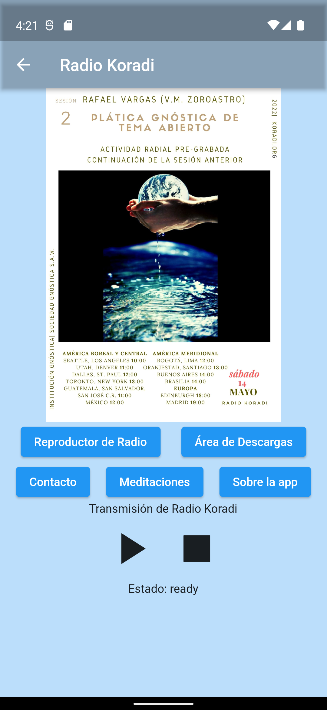

Web Crawler
This python script was written to crawl a website in order to find any anchor tags that
link to .zip file downloads. The addresses of these files is stored in a list and once
crawling is completed the script will download each file using the requests library.
import requests
import re
import os
from bs4 import BeautifulSoup
from tqdm import tqdm
target_url = "https://koradi.org/en/downloads/"
parent_dir = "/Users/user/koradi/"
headers = {
'User-Agent': 'Mozilla/5.0 (Macintosh; Intel Mac OS X 10.15; rv:94.0) Gecko/20100101 Firefox/94.0',
}
def crawl():
target_links = []
print("Crawling Main Page")
response = requests.get(target_url, headers=headers)
soup = BeautifulSoup(response.content, 'html5lib')
indirect_links = soup.find_all('a', {'href': re.compile(r'/en.*-.*/')})
authors = [link['href'] for link in indirect_links]
print("Crawling Secondary Pages")
for each in tqdm(authors):
response = requests.get(each, headers=headers)
soup = BeautifulSoup(response.content, 'html5lib')
download_links = soup.find_all('a', {'href': re.compile(r'.*.zip')})
for link in download_links:
target_links.append(link['href'])
target_links = list(set(target_links))
print(len(target_links), "Files available for download...")
return target_links
def download(target_links):
print("Beginning Downloads...")
for link in target_links:
author = link.split('/')[-2]
file_name = link.split('/')[-1]
dir_path = os.path.join(parent_dir, author)
if not os.path.exists(dir_path):
os.mkdir(dir_path)
file_path = os.path.join(dir_path, file_name)
if not os.path.isfile(file_path):
print("Downloading file:%s from %s" % (file_name, author))
response = requests.get(link, stream=True)
with open(file_path, "wb+") as f:
for chunk in tqdm(response.iter_content(chunk_size=1024 * 1024)):
if chunk:
f.write(chunk)
print("%s downloaded!\n" % file_name)
print("All files downloaded!")
return
if __name__ == "__main__":
links = crawl()
download(links)
Twitter Air Quality Bot
This python script contacts the US Environmental Protection Agency's AirNow API to retrieve current Missoula Air Quality. This data is used to format a Tweet informing followers of current air quality.
import tweepy
import requests
import time
import os
API_KEY = os.environ['API_KEY']
API_KEY_SECRET = os.environ['API_KEY_SECRET']
ACCESS_TOKEN = os.environ['ACCESS_TOKEN']
ACCESS_TOKEN_SECRET = os.environ['ACCESS_TOKEN_SECRET']
auth = tweepy.OAuth1UserHandler(consumer_key=API_KEY, consumer_secret=API_KEY_SECRET, access_token=ACCESS_TOKEN, access_token_secret=ACCESS_TOKEN_SECRET)
api = tweepy.API(auth, wait_on_rate_limit=True)
# Provide reference to airnow.gov at the end of each tweet
airnow = 'https://www.airnow.gov/?city=Missoula&state=MT&country=USA'
# helper function to return air quality category when passed an AQI value
def get_category(aqi):
if aqi < 51:
return "Good"
elif 50 < aqi < 101:
return "Moderate"
elif 100 < aqi < 151:
return "Unhealthy for Sensitive Groups"
elif 150 < aqi < 201:
return "Unhealthy"
elif 200 < aqi < 301:
return "Very Unhealthy"
elif aqi > 300:
return "Hazardous"
else:
return ""
def get_AQI():
# the tweet which will be returned
tweet = ''
# contact API endpoint
response = requests.get('https://www.airnowapi.org/aq/observation/zipCode/current/?format=application/json&zipCode=59801&distance=25&API_KEY=REDACTED')
data = response.json()
# ensure that all pollutants are contained in response to avoid index out of range
num_pollutants = len(data)
# response payload for each pollutant
o3 = data[0] if num_pollutants > 0 else None
pm25 = data[1] if num_pollutants > 1 else None
pm10 = data[2] if num_pollutants > 2 else None
# AQI for each pollutant
if o3:
if o3['ParameterName'] == 'O3':
o3_aqi = o3['AQI']
else:
o3_aqi = None
tweet += "API returned unexpected payload for Ozone! "
else:
o3_aqi = None
tweet += "No Ozone data provided. "
if pm25:
if pm25['ParameterName'] == 'PM2.5':
pm25_aqi = pm25['AQI']
else:
pm25_aqi = None
tweet += "API returned unexpected payload for PM2.5! "
else:
pm25_aqi = None
tweet += "No PM2.5 data provided. "
if pm10:
if pm10['ParameterName'] == 'PM10':
pm10_aqi = pm10['AQI']
else:
pm10_aqi = None
tweet += "API returned unexpected payload for PM10! "
else:
pm10_aqi = None
tweet += "No PM10 data provided. "
# format time correctly
if o3:
latest_measure = (12 - ((- o3['HourObserved']) % 12), 'AM' if o3['HourObserved'] < 11 else 'PM')
elif pm25:
latest_measure = (12 - ((- pm25['HourObserved']) % 12), 'AM' if pm25['HourObserved'] < 11 else 'PM')
elif pm10:
latest_measure = (12 - ((- pm10['HourObserved']) % 12), 'AM' if pm10['HourObserved'] < 11 else 'PM')
else:
latest_measure = 'an unknown time. An error occurred.'
# dict containing pollutant, aqi as key, value
all_polutants = {
'Ozone (03)': o3_aqi if o3_aqi else None,
'Fine Particles (PM 2.5)' : pm25_aqi if pm25_aqi else None,
'Course Particles (PM 10)' : pm10_aqi if pm10_aqi else None
}
# get the top pollutant
top_pollutant = max(all_polutants, key = lambda k: all_polutants[k] if all_polutants[k] != None else float('-inf'))
# get the value corresponding to the top pollutant
AQI = all_polutants[top_pollutant]
# format the tweet
tweet += f'Current Missoula Air Quality Index is {AQI} ({get_category(AQI)}). The major pollutant is {top_pollutant}. This measurement occurred at {latest_measure[0]} {latest_measure[1]}. \n{airnow}'
return tweet
if __name__ == "__main__":
while True:
try:
api.verify_credentials()
print("Authentication succeeded")
try:
api.update_status(status=get_AQI())
except Exception as e:
print(e)
except Exception as e:
print("Authentication failed")
print(e)
# run this script every 15 minutes
# duplicate tweets will be rejected by the Twitter API
time.sleep(3 * 60 * 60)
Koradi App
The Koradi App is a Flutter project allowing users to interact with Koradi Radio. This application has been localized for six different languages and allows users to connect to a continuous audio stream originating from the Koradi Radio server. It implements a background audio service in order to continuously play media, even when the app is not in the foreground.
